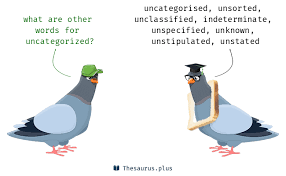

Books to be catalogued
| Box Number | Subject | Id No. | Box Colour | Author | Title | ISBN Number | Our Barcode Number | Status |
|---|---|---|---|---|---|---|---|---|
| 04 | Black | Williams, Ronald | The Heather And The Gale: Clan Donald And Clan Campbell During The War Of Montrose | |||||
| 15 | Black | UK Government | Return Of Owners Of Land 1876 | |||||
| 16 | Black | O'Rourke, Alan Daniel | Inchigeelagh Church | |||||
| 17 | Black | Griffith, Sir Richard | Primary Valuations: Ballyvourney | |||||
| 18 | Black | Griffith, Sir Richard | Primary Valuations: Aghabollogue, Aghinagh, Macroom | |||||
| 19 | Black | Griffith, Sir Richard | Primary Valuations: O'Rourkes | |||||
| 20 | Black | Clarke, H.B. & Simms, Anngret | The Comparative History Of Urban Origins In Non-Roman Europe, Part 01 And 02: Ireland, Wales, Denmark, Germany, Poland and Russia From The Ninth To The Thirteenth Century | |||||
| 21 | Black | Tracton | Tracton News Sheet Vol. 31 2009 | |||||
| 22 | Black | Collins | Collins Essential - Collins Essential English Dictionary - Collins Essential | |||||
| 23 | Black | Canny, Nicholas P | From Reformation To Restoration Ireland, 1534 - 1660 | |||||
| 24 | Black | Kenyon, John | The Civil War Of England | |||||
| 25 | Black | Lisheenkyle NS, Athenry & St. Brendan's NS, Loughrea | Short History Of Athenry & Loughrea Walled Town | |||||
| 26 | Black | Castle, Birr |